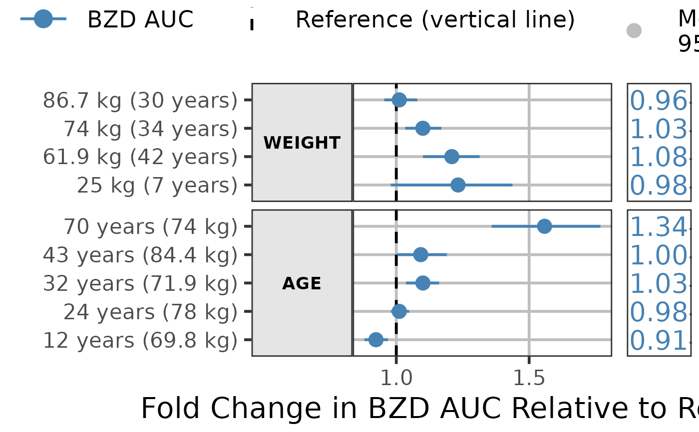
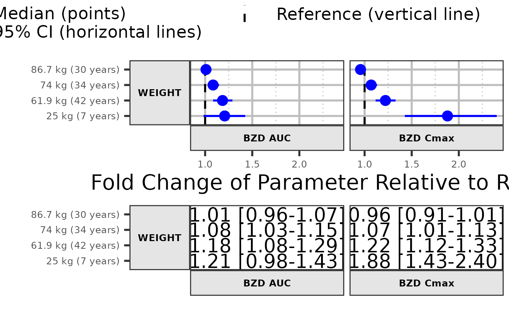
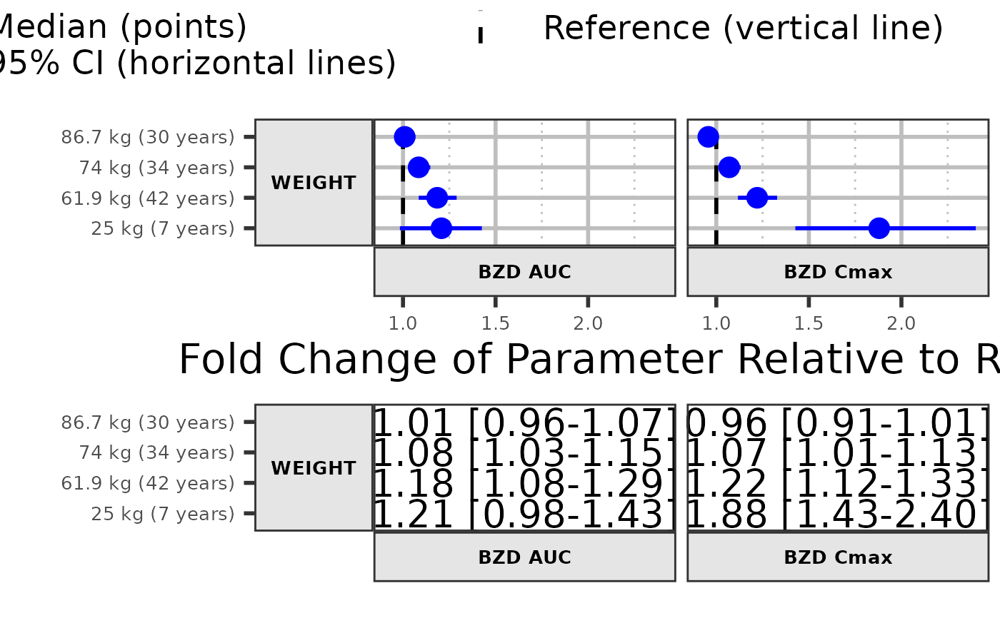

Produce forest plots to visualize covariate effects
forest_plot(
data,
facet_formula = "covname~paramname",
xlabel = "",
ylabel = "",
x_facet_text_size = 13,
y_facet_text_size = 13,
x_facet_text_angle = 0,
y_facet_text_angle = 0,
x_facet_text_vjust = 0.5,
y_facet_text_vjust = 0.5,
x_facet_text_hjust = 0.5,
y_facet_text_hjust = 0.5,
x_facet_text_col = "black",
y_facet_text_col = "black",
xy_facet_text_bold = TRUE,
x_label_text_size = 16,
y_label_text_size = 16,
legend_title_size = 12,
break_ylabel = FALSE,
y_label_text_width = 25,
table_text_size = 7,
table_text_colour_overwrite = FALSE,
table_text_colour = "none",
base_size = 22,
theme_benrich = FALSE,
table_title = "",
table_title_size = 15,
ref_legend_text = "",
area_legend_text = "",
interval_legend_text = "",
interval_legend_title = "",
shape_legend_title = "",
legend_order = c("pointinterval", "ref", "area", "shape"),
combine_area_ref_legend = TRUE,
combine_interval_shape_legend = FALSE,
legend_position = "top",
show_ref_area = TRUE,
ref_area = c(0.8, 1.25),
ref_area_col = "#BEBEBE50",
show_ref_value = TRUE,
ref_value = 1,
ref_value_col = "black",
ref_value_size = 1,
ref_value_linetype = "dashed",
ref_value_by_panel = FALSE,
ref_value_by_panel_data = NULL,
interval_col = "blue",
interval_size = 1,
interval_fatten = 4,
interval_linewidth = 1,
interval_shape = "circle small",
bsv_col = "red",
bsv_shape = "circle small",
bsv_text_id = c("BSV", "bsv", "IIV", "Bsv"),
interval_bsv_text = "",
strip_col = "#E5E5E5",
paramname_shape = FALSE,
paramname_color = FALSE,
legend_shape_reverse = FALSE,
legend_color_reverse = FALSE,
facet_switch = c("both", "y", "x", "none"),
facet_scales = c("fixed", "free_y", "free_x", "free"),
facet_space = c("fixed", "free_x", "free_y", "free"),
facet_labeller = "label_value",
label_wrap_width = 55,
facet_labeller_multiline = FALSE,
strip_placement = c("inside", "outside"),
strip_outline = TRUE,
facet_spacing = 5.5,
major_x_ticks = NULL,
major_x_labels = NULL,
minor_x_ticks = NULL,
x_range = NULL,
logxscale = FALSE,
show_yaxis_gridlines = TRUE,
show_xaxis_gridlines = TRUE,
show_table_facet_strip = "none",
table_facet_switch = c("both", "y", "x", "none"),
show_table_yaxis_tick_label = FALSE,
reserve_table_xaxis_label_space = TRUE,
table_panel_border = TRUE,
table_position = c("right", "below", "none"),
plot_table_ratio = 4,
vertical_dodge_height = 0.8,
legend_space_x_mult = 1,
legend_ncol_interval = 1,
legend_ncol_shape = 1,
plot_margin = c(5.5, 5.5, 5.5, 5.5),
table_margin = c(5.5, 5.5, 5.5, 5.5),
legend_margin = c(0, 0.1, -0.1, 0),
parse_xlabel = FALSE,
parse_ylabel = FALSE,
plot_title = "\n",
return_list = FALSE
)Arguments
- data
Data to use.
- facet_formula
Facet formula.
- xlabel
X axis title.
- ylabel
Y axis title.
- x_facet_text_size
Facet text size X.
- y_facet_text_size
Facet text size Y.
- x_facet_text_angle
Facet text angle X.
- y_facet_text_angle
Facet text angle Y.
- x_facet_text_vjust
Facet text vertical justification.
- y_facet_text_vjust
Facet text vertical justification.
- x_facet_text_hjust
Facet text horizontal justification.
- y_facet_text_hjust
Facet text horizontal justification.
- x_facet_text_col
Facet text color default to black.
- y_facet_text_col
Facet text color default to black.
- xy_facet_text_bold
Bold Facet text. Logical TRUE FALSE.
- x_label_text_size
X axis labels size.
- y_label_text_size
Y axis labels size.
- legend_title_size
Legend title size if present.
- break_ylabel
Split Y axis labels into multiple lines. Logical FALSE TRUE.
- y_label_text_width
Number of characters to break Y axis labels.
- table_text_size
Table text size.
- table_text_colour_overwrite
Logical TRUE FALSE.
- table_text_colour
Table text color to be used and overwrites mapped color
- base_size
theme_bw base_size for the plot and table.
- theme_benrich
apply Benjamin Rich's theming.
- table_title
What text to use for table title (theme_benrich has a default).
- table_title_size
table title size.
- ref_legend_text
Reference legend text.
- area_legend_text
Area legend text.
- interval_legend_text
Pointinterval legend text.
- interval_legend_title
Pointinterval legend title defaults to empty.
- shape_legend_title
Shape legend title defaults to empty.
- legend_order
Legend order. A four-element vector with the following items ordered in your desired order: "pointinterval", "ref", "area", "shape". if an item is absent the legend will be omitted.
- combine_area_ref_legend
Combine reference and area legends if they share the same text?
- combine_interval_shape_legend
Combine interval and shape legends?
- legend_position
where to put the legend: "top", "bottom","right","none"
- show_ref_area
Show reference window?
- ref_area
Reference area. Two-element numeric vector multiplying the ref_value.
- ref_area_col
Reference area background color.
- show_ref_value
Show reference line?
- ref_value
X intercept of reference line.
- ref_value_col
Reference line color.
- ref_value_size
Reference line size.
- ref_value_linetype
Reference line linetype.
- ref_value_by_panel
The ref_value vary by panel TRUE or FALSE.
- ref_value_by_panel_data
if ref_value_by_panel is TRUE, data.frame to use for Reference (lines).
- interval_col
Point range color. One or Multiple values.
- interval_size
Point range size. Default to 1
- interval_fatten
Point range fatten. Default to 4
- interval_linewidth
Point range line width. Default to 1
- interval_shape
Shape used for the Point Range. Default to "circle small".
- bsv_col
BSV pointinterval color. One value.
- bsv_shape
Shape used for the BSV Point Range. Default to "circle small".
- bsv_text_id
Text string(s) to identify BSV. Default to c("BSV","bsv","IIV","Bsv")
- interval_bsv_text
BSV legend text.
- strip_col
Strip background color.
- paramname_shape
Map symbol to parameter(s) name? TRUE or FALSE.
- paramname_color
Map color to parameter(s) name? TRUE or FALSE.
- legend_shape_reverse
TRUE or FALSE.
- legend_color_reverse
TRUE or FALSE.
- facet_switch
Facet switch to near axis. Possible values: "both", "y", "x", "none".
- facet_scales
Facet scales. Possible values: "free_y", "fixed", "free_x", "free".
- facet_space
Facet spaces. Possible values: "fixed", "free_x", "free_y", "free".
- facet_labeller
Facet Labeller. Default "label_value" any other valid `facet_grid` labeller can be specified.
- label_wrap_width
How many characters before breaking the line. Numeric value. any other valid `facet_grid` labeller can be specified.
- facet_labeller_multiline
break facet strips into multiple lines. Logical TRUE FALSE.
- strip_placement
Strip placement. Possible values: "inside", "outside".
- strip_outline
Draw rectangle around the Strip. Logical TRUE FALSE.
- facet_spacing
Control the space between facets in points.
- major_x_ticks
X axis major ticks. Numeric vector.
- major_x_labels
X axis labels. Character vector should be same length as major_x_ticks.
- minor_x_ticks
X axis minor ticks. Numeric vector.
- x_range
Range of X values. Two-element numeric vector.
- logxscale
X axis log scale. Logical TRUE FALSE.
- show_yaxis_gridlines
Draw the y axis gridlines. Logical TRUE FALSE.
- show_xaxis_gridlines
Draw the x axis gridlines. Logical TRUE FALSE.
- show_table_facet_strip
Possible values: "none", "both", "y", "x".
- table_facet_switch
Table facet switch to near axis. Possible values: "both", "y", "x", "none".
- show_table_yaxis_tick_label
Show table y axis ticks and labels?
- reserve_table_xaxis_label_space
keep space for the x axis label to keep alignment.
- table_panel_border
Draw the panel border for the table. Logical TRUE FALSE.
- table_position
Table position. Possible values: "right", "below", "none".
- plot_table_ratio
Plot-to-table ratio. Suggested value between 1-5.
- vertical_dodge_height
Amount of vertical dodging to apply on segments and table text.
- legend_space_x_mult
Multiplier to adjust the spacing between legend items.
- legend_ncol_interval
Control the number of columns for the pointinterval legend.
- legend_ncol_shape
Control the number of columns for the shape legend.
- plot_margin
Control the white space around the main plot. Vector of four numeric values for the top, right, bottom and left sides.
- table_margin
Control the white space around the table. Vector of four numeric values for the top, right, bottom and left sides.
- legend_margin
Control the white space around the plot legend. Vector of four numeric values for the top, right, bottom and left sides.
- parse_xlabel
treat xlabel as an expression. Logical FALSE TRUE.
- parse_ylabel
treat ylabel as an expression. Logical FALSE TRUE.
- plot_title
main plot title default to a line break.
- return_list
What to return if True a list of the main and table plots is returned instead of the gtable/plot.
Examples
library(dplyr)
#>
#> Attaching package: ‘dplyr’
#> The following objects are masked from ‘package:data.table’:
#>
#> between, first, last
#> The following objects are masked from ‘package:stats’:
#>
#> filter, lag
#> The following objects are masked from ‘package:base’:
#>
#> intersect, setdiff, setequal, union
library(ggplot2)
# Example 1
plotdata <- get_sample_data("forest-plot-table.csv")
plotdata <- plotdata %>%
mutate(midlabel = format(round(mid,2), nsmall = 2),
lowerlabel = format(round(lower,2), nsmall = 2),
upperlabel = format(round(upper,2), nsmall = 2),
LABEL = paste0(midlabel, " [", lowerlabel, "-", upperlabel, "]"))
param <- "BZD AUC"
plotdata <- filter(plotdata,paramname==param)
plotdata$covname <- reorder(plotdata$covname,plotdata$upper,FUN =max)
plotdata$label <- reorder(plotdata$label,plotdata$scen)
covs <- c("WEIGHT","AGE")
plotdata <- filter(plotdata,covname%in%covs)
forest_plot(plotdata,
ref_legend_text = "Reference (vertical line)",
area_legend_text = "Reference (vertical line)",
xlabel = paste("Fold Change in", param, "Relative to Reference"),
logxscale = TRUE, major_x_ticks =c(0.1,1,1.5),
show_ref_area = FALSE,
paramname_color =TRUE,
interval_col =c("steelblue","red","steelblue","red"),
facet_formula = "covname~.",
facet_scales = "free_y",
facet_space = "free_y",
show_table_facet_strip = "none",
table_position = "right",
plot_title = "",
plot_table_ratio = 4)
#> Scale for x is already present.
#> Adding another scale for x, which will replace the existing scale.

 # Example 2
plotdata <- get_sample_data("forest-plot-table.csv")
plotdata <- plotdata %>%
mutate(midlabel = format(round(mid,2), nsmall = 2),
lowerlabel = format(round(lower,2), nsmall = 2),
upperlabel = format(round(upper,2), nsmall = 2),
LABEL = paste0(midlabel, " [", lowerlabel, "-", upperlabel, "]"))
param <- c("BZD AUC","BZD Cmax")
plotdata <- filter(plotdata,paramname%in%param)
plotdata <- filter(plotdata,covname%in%"WEIGHT")
plotdata$covname <- reorder(plotdata$covname,plotdata$upper,FUN =max)
plotdata$label <- reorder(plotdata$label,plotdata$scen)
forest_plot(plotdata,
ref_legend_text = "Reference (vertical line)",
area_legend_text = "Reference (vertical line)",
xlabel = paste("Fold Change of Parameter", "Relative to Reference"),
show_ref_area = FALSE,
facet_formula = "covname~paramname",
facet_scales = "free_y",
facet_space = "free_y",
x_facet_text_size = 10,
y_facet_text_size = 10,
y_label_text_size = 10,
y_label_text_width = 15,
x_label_text_size = 10,
facet_switch = "both",
show_table_facet_strip = "both",
show_table_yaxis_tick_label = TRUE,
table_position = "below",
plot_title = "",
plot_table_ratio = 1)

# Example 2
plotdata <- get_sample_data("forest-plot-table.csv")
plotdata <- plotdata %>%
mutate(midlabel = format(round(mid,2), nsmall = 2),
lowerlabel = format(round(lower,2), nsmall = 2),
upperlabel = format(round(upper,2), nsmall = 2),
LABEL = paste0(midlabel, " [", lowerlabel, "-", upperlabel, "]"))
param <- c("BZD AUC","BZD Cmax")
plotdata <- filter(plotdata,paramname%in%param)
plotdata <- filter(plotdata,covname%in%"WEIGHT")
plotdata$covname <- reorder(plotdata$covname,plotdata$upper,FUN =max)
plotdata$label <- reorder(plotdata$label,plotdata$scen)
forest_plot(plotdata,
ref_legend_text = "Reference (vertical line)",
area_legend_text = "Reference (vertical line)",
xlabel = paste("Fold Change of Parameter", "Relative to Reference"),
show_ref_area = FALSE,
facet_formula = "covname~paramname",
facet_scales = "free_y",
facet_space = "free_y",
x_facet_text_size = 10,
y_facet_text_size = 10,
y_label_text_size = 10,
y_label_text_width = 15,
x_label_text_size = 10,
facet_switch = "both",
show_table_facet_strip = "both",
show_table_yaxis_tick_label = TRUE,
table_position = "below",
plot_title = "",
plot_table_ratio = 1)

 if (FALSE) { # \dontrun{
# Example 3a
plotdata <- get_sample_data("forest-plot-table.csv")
plotdata <- plotdata %>%
mutate(midlabel = format(round(mid,2), nsmall = 2),
lowerlabel = format(round(lower,2), nsmall = 2),
upperlabel = format(round(upper,2), nsmall = 2),
LABEL = paste0(midlabel, " [", lowerlabel, "-", upperlabel, "]"))
plotdata$covname <- reorder(plotdata$covname,plotdata$upper,FUN =max)
plotdata$label <- reorder(plotdata$label,plotdata$scen)
plotdata$compound <- c(rep("1-OH",30),rep("BZD",30))
plotdata$paramname <- c(rep("AUC",15),rep("CMAX",15),rep("AUC",15),rep("CMAX",15))
forest_plot(plotdata,
ref_area = c(0.8, 1.2),
x_facet_text_size = 13,
y_facet_text_size = 13,
ref_legend_text = "Reference (vertical line)\n+/- 20% limits (colored area)",
area_legend_text = "Reference (vertical line)\n+/- 20% limits (colored area)",
xlabel = "Fold Change Relative to Parameter",
facet_formula = covname~compound,
facet_switch = "both",
facet_scales = "free",
facet_space = "fixed",
paramname_shape = TRUE,
legend_shape_reverse = TRUE,
interval_shape = c("square","triangle"),
paramname_color = FALSE,
combine_interval_shape_legend = FALSE,
table_position = "right", plot_title = "",
ref_area_col = rgb( col2rgb("gray50")[1], col2rgb("gray50")[2],col2rgb("gray50")[3],
max = 255, alpha = 0.1*255 ) ,
interval_col = c("steelblue"),
strip_col = "lightblue",
plot_table_ratio = 1.5)
# Example 3b
plotdata$paramname <- c(rep("1-OH",30),rep("BZD",30))
plotdata$paramname2 <- c(rep("AUC",15),rep("CMAX",15),rep("AUC",15),rep("CMAX",15))
forest_plot(plotdata,
show_ref_area = TRUE,
x_facet_text_size = 13,
y_facet_text_size = 13,
ref_legend_text = "Reference (vertical line)",
area_legend_text = "Reference (vertical line)",
xlabel = "Fold Change Relative to Parameter",
facet_formula = covname~paramname2,
facet_switch = "both",
facet_scales = "free",
facet_space = "free",
legend_order = c("shape","pointinterval","ref"),
paramname_shape = TRUE,
interval_shape = c("diamond","diamond filled",
"diamond","diamond filled"),
paramname_color = TRUE,
combine_interval_shape_legend = TRUE,
legend_shape_reverse = TRUE,
legend_color_reverse = TRUE,
interval_legend_title="Median (points)\n95% CI (horizontal lines)",
table_position = "right", plot_title = "",
ref_area_col = "gray85" ,
interval_col = c("#ee3124", "#fdbb2f"),
strip_col = "#475c6b",
y_facet_text_col = "white",x_facet_text_col = "white",
major_x_labels = c("1/2", "0.8","1", "1.25", "2"),
logxscale = TRUE, major_x_ticks =c(0.5,0.8,1,1.25,2),
table_text_size = 5,
plot_table_ratio = 1.5,
ref_value_by_panel = TRUE,
ref_value_by_panel_data = as.data.frame(
plotdata %>%
distinct(paramname2,covname) %>%
dplyr::mutate(xintercept=ifelse(paramname2=="CMAX",1,1.2))))
# Example 3
plotdata <- get_sample_data("forestplotdatacpidata.csv")
forest_plot(plotdata,
ref_area = c(0.8, 1.2),
x_facet_text_size = 12,
y_facet_text_size = 12,
y_label_text_size = 10,
x_label_text_size = 10,
table_text_size = 6,
plot_table_ratio = 1.5,
ref_legend_text = "Reference (vertical line)\n+/- 20% limits (colored area)",
area_legend_text = "Reference (vertical line)\n+/- 20% limits (colored area)",
xlabel = "Fold Change Relative to RHZE",
facet_formula = "covname~paramname",
table_position = "below",
show_table_facet_strip = "both",
show_table_yaxis_tick_label = TRUE)
# Example 4
plotdata <- get_sample_data("dataforest.csv")
plotdata <- plotdata %>%
dplyr::mutate(midlabel = format(round(mid,2), nsmall = 2),
lowerlabel = format(round(lower,2), nsmall = 2),
upperlabel = format(round(upper,2), nsmall = 2),
LABEL = paste0(midlabel, " [", lowerlabel, "-", upperlabel, "]"))
plotdata <- plotdata %>%
filter(covname%in%c("Weight"))
plotdata$label <- as.factor(as.character(plotdata$label))
plotdata$label <- factor(plotdata$label, c("36.2 kg","66 kg","110 kg"))
forest_plot(plotdata,
ref_area = c(0.8, 1.2),
x_facet_text_size = 13,
y_facet_text_size = 13,
ref_legend_text = "Reference (vertical line)\n+/- 20% limits (colored area)",
area_legend_text = "Reference (vertical line)\n+/- 20% limits (colored area)",
xlabel = "Fold Change Relative to Parameter",
facet_formula = "covname~paramname",
facet_switch = "both",
facet_scales = "free",
facet_space = "fixed",
table_position = "below",
plot_table_ratio = 1,
show_table_facet_strip = "both",
show_table_yaxis_tick_label = TRUE)
# Example 5
forest_plot(plotdata,
ref_area = c(0.8, 1.2),
x_facet_text_size = 13,
y_facet_text_size = 13,
ref_legend_text = "Reference (vertical line)\n+/- 20% limits (colored area)",
area_legend_text = "Reference (vertical line)\n+/- 20% limits (colored area)",
xlabel = "Fold Change Relative to Parameter",
facet_formula = "covname~.",
facet_switch = "both",
facet_scales = "free",
facet_space = "fixed",
paramname_shape = TRUE,
table_position = "none",
ref_area_col = rgb( col2rgb("gray50")[1], col2rgb("gray50")[2],col2rgb("gray50")[3],
max = 255, alpha = 0.1*255 ) ,
interval_col = "steelblue",
strip_col = "lightblue",
plot_table_ratio = 1)
} # }
if (FALSE) { # \dontrun{
# Example 3a
plotdata <- get_sample_data("forest-plot-table.csv")
plotdata <- plotdata %>%
mutate(midlabel = format(round(mid,2), nsmall = 2),
lowerlabel = format(round(lower,2), nsmall = 2),
upperlabel = format(round(upper,2), nsmall = 2),
LABEL = paste0(midlabel, " [", lowerlabel, "-", upperlabel, "]"))
plotdata$covname <- reorder(plotdata$covname,plotdata$upper,FUN =max)
plotdata$label <- reorder(plotdata$label,plotdata$scen)
plotdata$compound <- c(rep("1-OH",30),rep("BZD",30))
plotdata$paramname <- c(rep("AUC",15),rep("CMAX",15),rep("AUC",15),rep("CMAX",15))
forest_plot(plotdata,
ref_area = c(0.8, 1.2),
x_facet_text_size = 13,
y_facet_text_size = 13,
ref_legend_text = "Reference (vertical line)\n+/- 20% limits (colored area)",
area_legend_text = "Reference (vertical line)\n+/- 20% limits (colored area)",
xlabel = "Fold Change Relative to Parameter",
facet_formula = covname~compound,
facet_switch = "both",
facet_scales = "free",
facet_space = "fixed",
paramname_shape = TRUE,
legend_shape_reverse = TRUE,
interval_shape = c("square","triangle"),
paramname_color = FALSE,
combine_interval_shape_legend = FALSE,
table_position = "right", plot_title = "",
ref_area_col = rgb( col2rgb("gray50")[1], col2rgb("gray50")[2],col2rgb("gray50")[3],
max = 255, alpha = 0.1*255 ) ,
interval_col = c("steelblue"),
strip_col = "lightblue",
plot_table_ratio = 1.5)
# Example 3b
plotdata$paramname <- c(rep("1-OH",30),rep("BZD",30))
plotdata$paramname2 <- c(rep("AUC",15),rep("CMAX",15),rep("AUC",15),rep("CMAX",15))
forest_plot(plotdata,
show_ref_area = TRUE,
x_facet_text_size = 13,
y_facet_text_size = 13,
ref_legend_text = "Reference (vertical line)",
area_legend_text = "Reference (vertical line)",
xlabel = "Fold Change Relative to Parameter",
facet_formula = covname~paramname2,
facet_switch = "both",
facet_scales = "free",
facet_space = "free",
legend_order = c("shape","pointinterval","ref"),
paramname_shape = TRUE,
interval_shape = c("diamond","diamond filled",
"diamond","diamond filled"),
paramname_color = TRUE,
combine_interval_shape_legend = TRUE,
legend_shape_reverse = TRUE,
legend_color_reverse = TRUE,
interval_legend_title="Median (points)\n95% CI (horizontal lines)",
table_position = "right", plot_title = "",
ref_area_col = "gray85" ,
interval_col = c("#ee3124", "#fdbb2f"),
strip_col = "#475c6b",
y_facet_text_col = "white",x_facet_text_col = "white",
major_x_labels = c("1/2", "0.8","1", "1.25", "2"),
logxscale = TRUE, major_x_ticks =c(0.5,0.8,1,1.25,2),
table_text_size = 5,
plot_table_ratio = 1.5,
ref_value_by_panel = TRUE,
ref_value_by_panel_data = as.data.frame(
plotdata %>%
distinct(paramname2,covname) %>%
dplyr::mutate(xintercept=ifelse(paramname2=="CMAX",1,1.2))))
# Example 3
plotdata <- get_sample_data("forestplotdatacpidata.csv")
forest_plot(plotdata,
ref_area = c(0.8, 1.2),
x_facet_text_size = 12,
y_facet_text_size = 12,
y_label_text_size = 10,
x_label_text_size = 10,
table_text_size = 6,
plot_table_ratio = 1.5,
ref_legend_text = "Reference (vertical line)\n+/- 20% limits (colored area)",
area_legend_text = "Reference (vertical line)\n+/- 20% limits (colored area)",
xlabel = "Fold Change Relative to RHZE",
facet_formula = "covname~paramname",
table_position = "below",
show_table_facet_strip = "both",
show_table_yaxis_tick_label = TRUE)
# Example 4
plotdata <- get_sample_data("dataforest.csv")
plotdata <- plotdata %>%
dplyr::mutate(midlabel = format(round(mid,2), nsmall = 2),
lowerlabel = format(round(lower,2), nsmall = 2),
upperlabel = format(round(upper,2), nsmall = 2),
LABEL = paste0(midlabel, " [", lowerlabel, "-", upperlabel, "]"))
plotdata <- plotdata %>%
filter(covname%in%c("Weight"))
plotdata$label <- as.factor(as.character(plotdata$label))
plotdata$label <- factor(plotdata$label, c("36.2 kg","66 kg","110 kg"))
forest_plot(plotdata,
ref_area = c(0.8, 1.2),
x_facet_text_size = 13,
y_facet_text_size = 13,
ref_legend_text = "Reference (vertical line)\n+/- 20% limits (colored area)",
area_legend_text = "Reference (vertical line)\n+/- 20% limits (colored area)",
xlabel = "Fold Change Relative to Parameter",
facet_formula = "covname~paramname",
facet_switch = "both",
facet_scales = "free",
facet_space = "fixed",
table_position = "below",
plot_table_ratio = 1,
show_table_facet_strip = "both",
show_table_yaxis_tick_label = TRUE)
# Example 5
forest_plot(plotdata,
ref_area = c(0.8, 1.2),
x_facet_text_size = 13,
y_facet_text_size = 13,
ref_legend_text = "Reference (vertical line)\n+/- 20% limits (colored area)",
area_legend_text = "Reference (vertical line)\n+/- 20% limits (colored area)",
xlabel = "Fold Change Relative to Parameter",
facet_formula = "covname~.",
facet_switch = "both",
facet_scales = "free",
facet_space = "fixed",
paramname_shape = TRUE,
table_position = "none",
ref_area_col = rgb( col2rgb("gray50")[1], col2rgb("gray50")[2],col2rgb("gray50")[3],
max = 255, alpha = 0.1*255 ) ,
interval_col = "steelblue",
strip_col = "lightblue",
plot_table_ratio = 1)
} # }